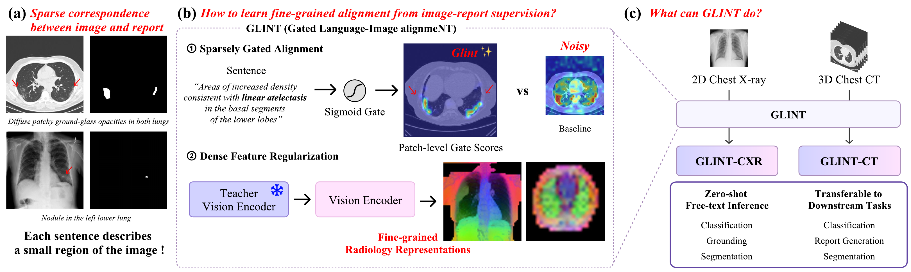
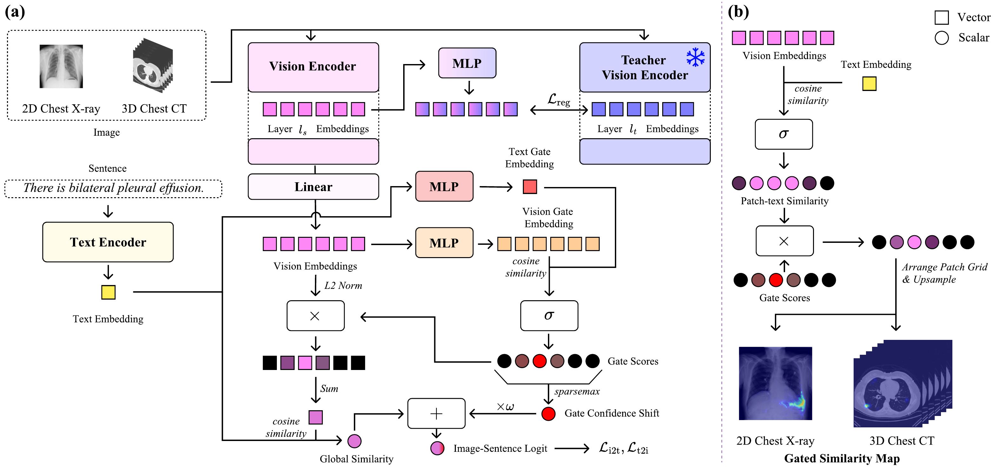

TL;DR
Radiology reports supervise the whole image, yet each finding occupies only a small region. GLINT models this sparse correspondence explicitly: Sparsely Gated Alignment lets a sigmoid gate in a separate gate embedding space select the patches relevant to each sentence, and Dense Feature Regularization anchors the encoder's intermediate features to a frozen SSL teacher so those patch features stay fine-grained. Built with DINOv3 (CXR) and V-JEPA 2.1 (CT), GLINT delivers zero-shot classification, grounding and segmentation from free text, with the largest gains exactly where sparse, query-specific localization is required. The GLINT vision encoder is also a strong standalone backbone: fine-tuned downstream, it outperforms both SSL encoders and medical VLMs on classification, report generation and segmentation.
Motivation
Image-report pairs are the natural supervision for radiology vision-language models, but the pairing hides a mismatch in scale: a sentence like "nodule in the left lower lung" describes a few patches, while the loss is applied at the global image-report level. Prior approaches spread alignment weight densely across all patches, which blurs localization and caps zero-shot grounding and segmentation.

Method at a glance
SGA — Sparsely Gated Alignment
Patch and text features are projected into a separate gate embedding space where a sigmoid gate activates only the patches relevant to each query. A sparsemax-pooled gate confidence shift ℓ = ρ + ω·e restores the absolute activation signal, so absent and present findings stay separable without breaking sparsity.

Zero-shot results
| Method | Classification | Grounding | Segmentation | |||||||
|---|---|---|---|---|---|---|---|---|---|---|
| PadChest | PadChest20 | ChestXray14 | ChestX-Det10 | CheXpert | Open-I | ChestX-Det10 | MS-CXR | ChestX-Det | SIIM | |
| GLoRIA3 | 0.565 | 0.558 | 0.610 | 0.645 | 0.750 | 0.589 | 0.367 | - | - | - |
| KAD4 | 0.750 | 0.735 | 0.789 | 0.735 | 0.905 | 0.807 | 0.391 | - | - | - |
| MedKLIP5 | 0.629 | 0.688 | 0.726 | 0.713 | 0.879 | 0.759 | 0.481 | 0.407 | 0.249 | 0.044 |
| CARZero6 | 0.810 | 0.837 | 0.811 | 0.796 | 0.923 | 0.838 | 0.543 | 0.749 | 0.304 | 0.081 |
| MedSigLIP7 | 0.736 | 0.747 | 0.742 | 0.702 | 0.859 | 0.763 | - | - | - | - |
| RadZero8 | 0.841 | 0.871 | 0.804 | 0.787 | 0.900 | 0.847 | 0.622 | 0.844 | 0.332 | 0.171 |
| GLINT-CXR | 0.863 | 0.917 | 0.825 | 0.853 | 0.921 | 0.881 | 0.729 | 0.892 | 0.434 | 0.317 |
Chest X-ray baseline rows are quoted from RadZero (MedSigLIP evaluated by us with its released weights). CT-CLIP and RadZero3D rows are quoted from the RadZero3D paper and COLIPRI (CRM, short prompts) from the COLIPRI paper; † reported by ViSD-Boost under a protocol excluding two labels; under that protocol GLINT-CT reaches 0.855 / 0.794. ‡ reported by VoxTell. GLINT also leads downstream fine-tuning — classification, report generation and segmentation on both modalities; full tables in the paper.
Models & Code
References (16)
- Siméoni et al. DINOv3. arXiv, 2025.
- Mur-Labadia et al. V-JEPA 2.1: Unlocking Dense Features in Video Self-Supervised Learning. arXiv, 2026.
- Huang et al. GLoRIA: A Multimodal Global-Local Representation Learning Framework for Label-Efficient Medical Image Recognition. ICCV, 2021.
- Zhang et al. Knowledge-enhanced visual-language pre-training on chest radiology images. Nature Communications, 2023.
- Wu et al. MedKLIP: Medical knowledge enhanced language-image pre-training for X-ray diagnosis. ICCV, 2023.
- Lai et al. CARZero: Cross-attention alignment for radiology zero-shot classification. CVPR, 2024.
- Sellergren et al. MedGemma technical report. arXiv, 2025.
- Park et al. RadZero: Similarity-Based Cross-Attention for Explainable Vision-Language Alignment in Chest X-ray with Zero-Shot Multi-Task Capability. NeurIPS, 2025.
- Hamamci et al. Generalist foundation models from a multimodal dataset for 3D computed tomography. Nature Biomedical Engineering, 2026.
- Blankemeier et al. Merlin: a computed tomography vision-language foundation model and dataset. Nature, 2026.
- Shui et al. Large-scale and fine-grained vision-language pre-training for enhanced CT image understanding. ICLR, 2025.
- Cao et al. Boosting vision semantic density with anatomy normality modeling for medical vision-language pre-training. ICCV, 2025.
- Park et al. RadZero3D: Bridging Self-Supervised Video Models and Medical Vision-Language Alignment for Zero-Shot Chest CT Interpretation. ICCV, 2025.
- Wald et al. Comprehensive language-image pre-training for 3D medical image understanding. arXiv, 2025.
- Zhao et al. Large-vocabulary segmentation for medical images with text prompts. npj Digital Medicine, 2025.
- Rokuss et al. VoxTell: Free-Text Promptable Universal 3D Medical Image Segmentation. arXiv, 2025.
BibTeX
If you use GLINT, please cite:
@inproceedings{park2026glint,
title = {{GLINT}: Sparsely Gated Vision-Language Alignment for Fine-Grained Radiology Representations},
author = {Park, Jonggwon and Lee, Seongeun and Park, Junhyun and
Yun, Hannah and Kim, Hyunwoong and Jeong, Sohyun and
Kang, Hyewon and Yoon, Byungmu and Choi, Kyoyun},
booktitle = {The Fortieth Annual Conference on Neural Information Processing Systems},
year = {2026},
url = {https://arxiv.org/abs/2606.03180}
}